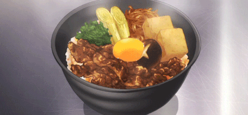

Chicken Donburi

Description
Donburi is a Japanese "rice-bowl dish" consisting of fish, meat, vegetables or other ingredients simmered together and served over rice.
Ingredients
- Garlic
- 280g spinach
- 2.5ml Sesame oil
- 2.5ml rice vinegar
- 2 boneless chicken breats halves
- 60ml sake
- 60ml dashi
- 60ml soy sauce
- 30ml mirin
To Serve:
- 6 cups cooked, short-grain Japanese rice
- Kizami nori
- 4 egg yolks
- 2 spring onions thinly sliced
- pickled ginger